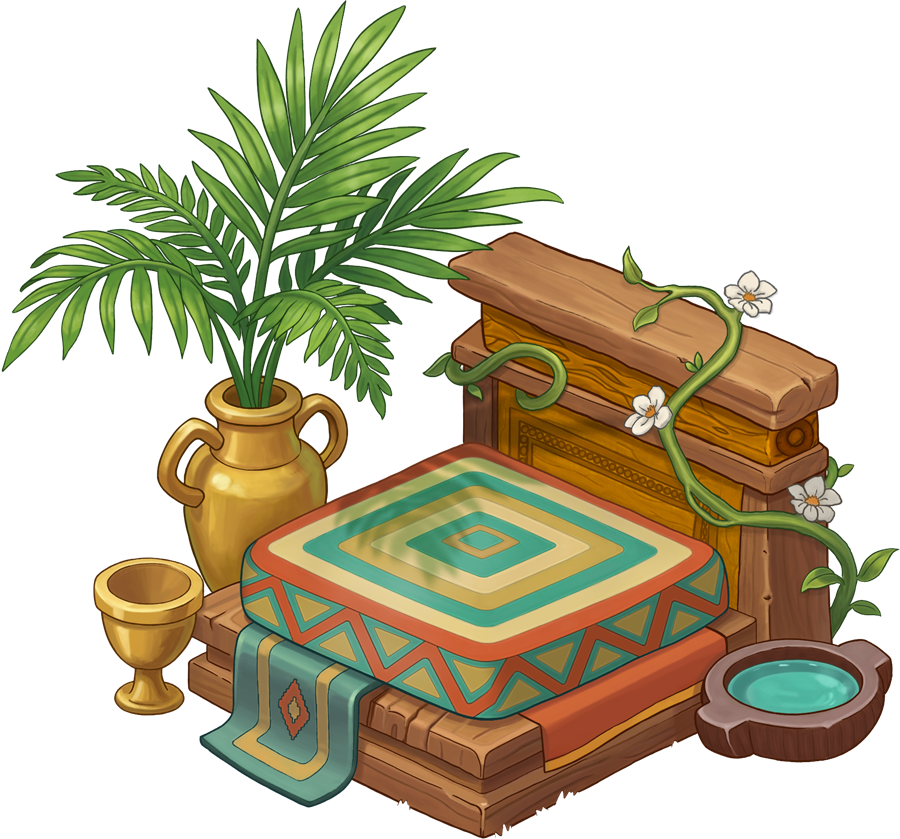
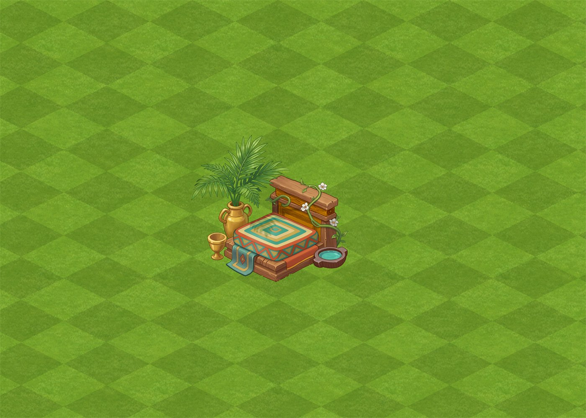
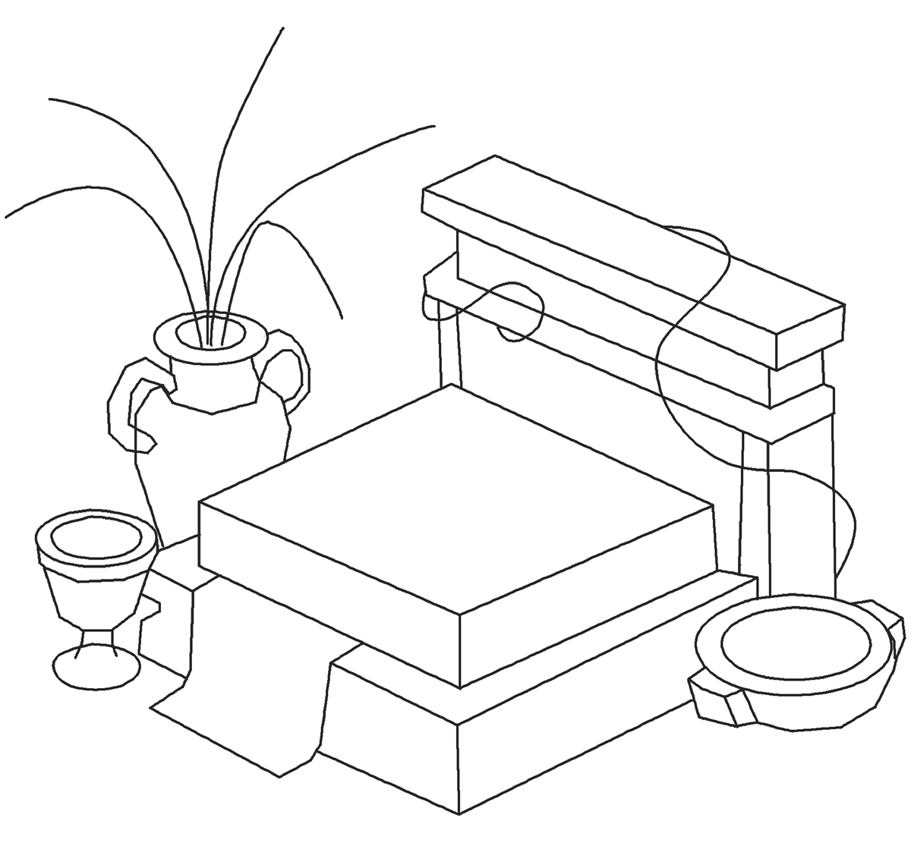
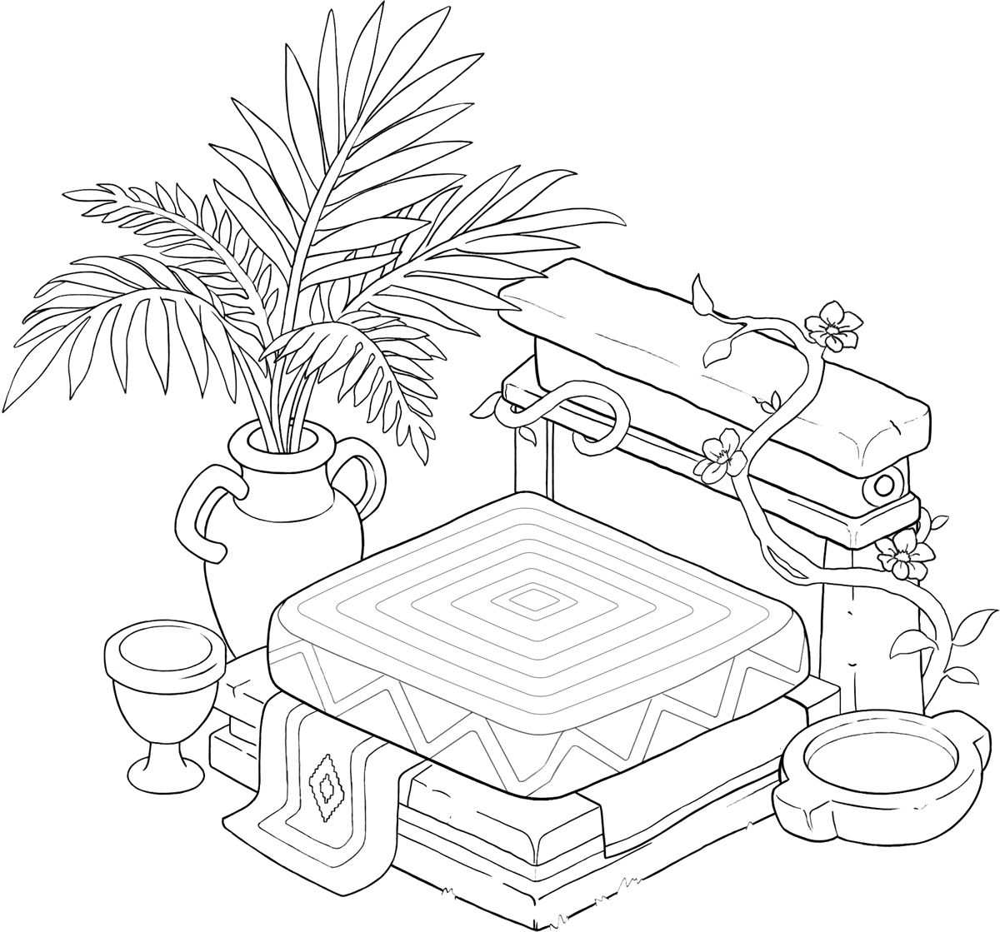
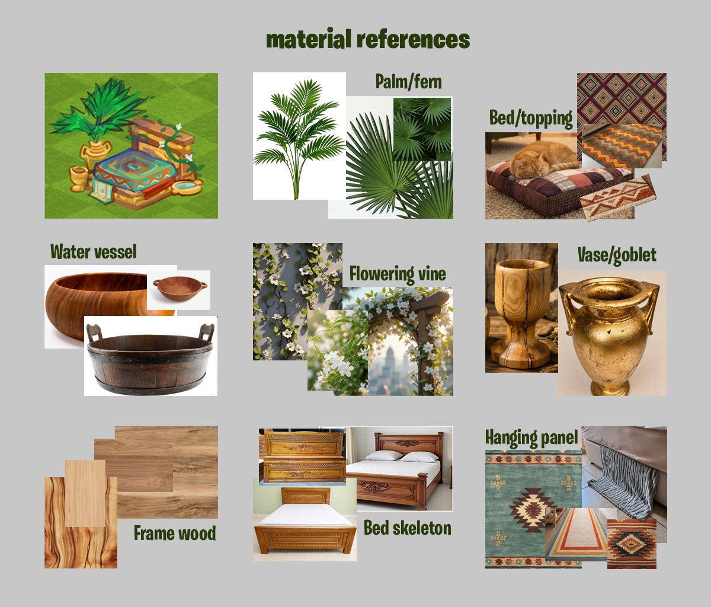
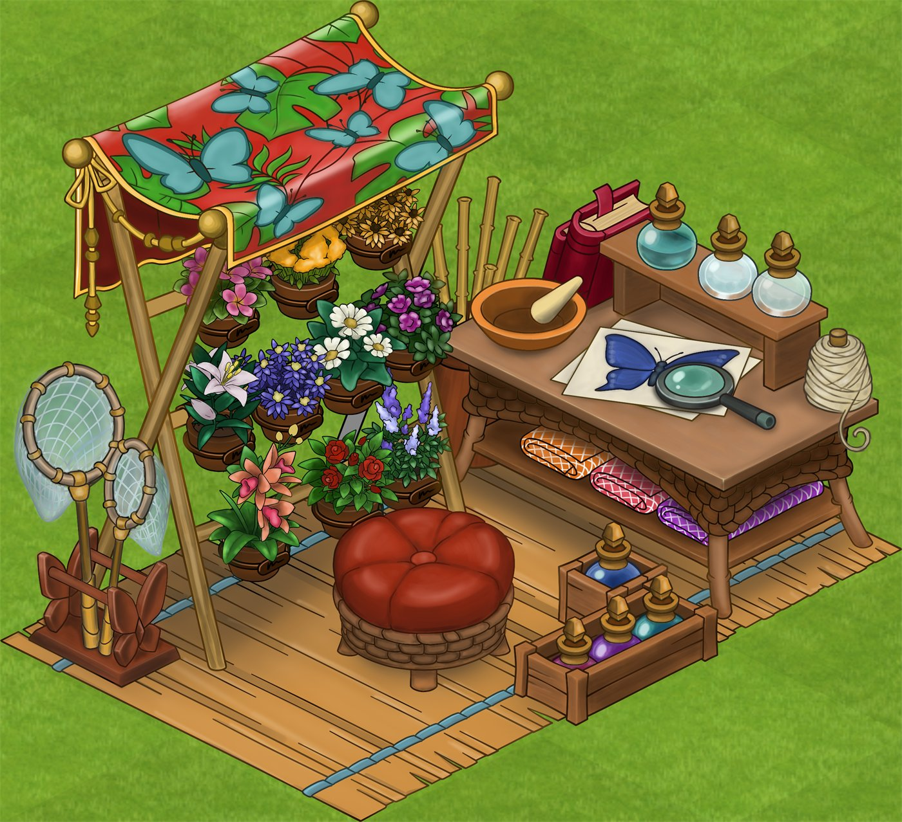
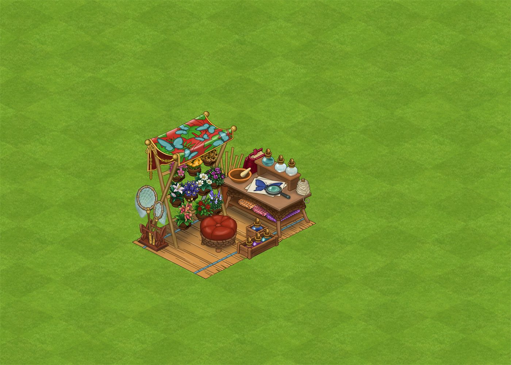
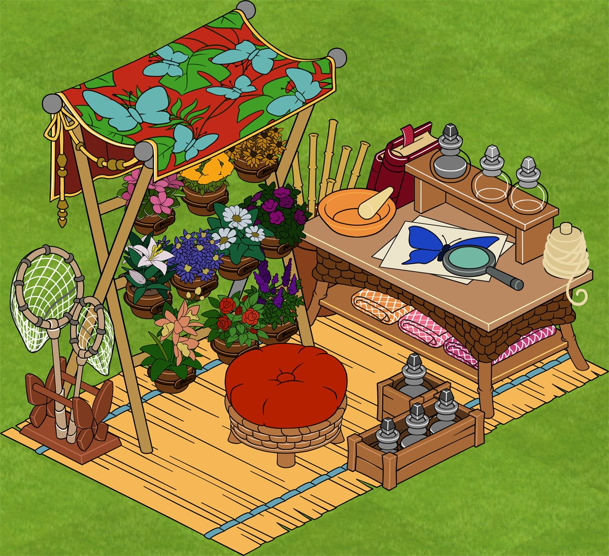
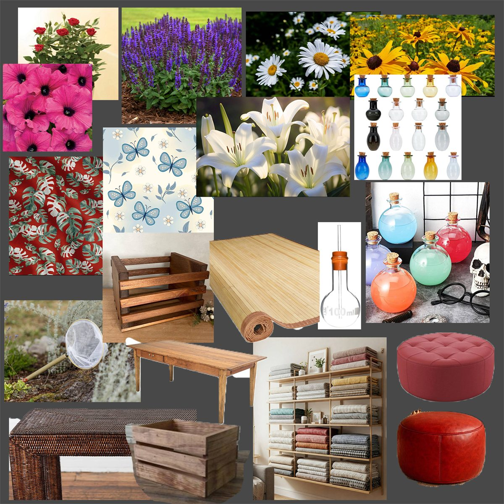

Cat Bed
An isometric prop for a farm-sim: a raised cat bed on a stacked timber base, with a woven cushion, a carved headboard and the small things that make a spot feel lived in — a water bowl, a palm in a gold urn, a vine finding its way up the post. Built to two hard constraints: sit inside an existing game’s art style rather than stand apart from it, and still read clearly at 12.5%, which is the size it actually appears in game. A second prop for the same world follows below, made later and against a deliberately short clock.
I drew this one for my cat, Alisa, not long after she died. She was the best cat there has ever been, and this is the kind of bed she deserved — something fit for royalty.
One prop, three passes
Built to sit in someone else’s world
Built to sit inside an existing farm-sim art style, and to hold up at 12.5% — the size it actually appears in game. That constraint drives everything: one patterned surface instead of several competing for attention, the palm massed into a few broad fronds, and a firm dark-to-light step between timber, cushion and grass so the silhouette still reads when the object is barely bigger than a thumbnail.
-

Finished asset
-

At in-game scale — the size a player actually sees it
-

Construction pass
-

Line art
-

Material references — third-party photography
A second prop, time-boxed
Entomologist’s Workshop
A second prop for the same world: a collector’s stall under a butterfly-print canopy, with nets on a rack, a specimen under the magnifier and stoppered bottles along the bench. What changed was the method — I set a short, fixed time budget before starting and held to it. Perfectionism is my default, so the limit was the exercise: decide what has to read at game size, spend the time there, and let the rest stay broad.
-

Finished asset
-

At in-game scale — the size a player actually sees it
-

Flat-colour pass
-

Material references — third-party photography